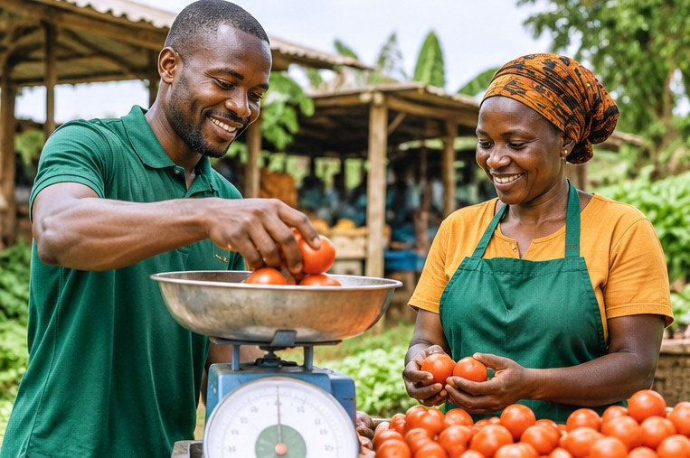

Value-chain credit intelligence
Understand the commercial relationships, transaction flows and operating realities behind a business and its place in the value chain.
SME FINANCING • GROWTH • CAPITAL ADVISORY
Practical financing access and financial advisory for established businesses ready for their next stage of growth.
Juhudi Leo, Imara Kesho
Amanzi Africa works with established SMEs to identify appropriate financing options, strengthen financial readiness and improve the way businesses manage capital and growth.
We bring together financing knowledge, structured business assessment and practical financial advisory to help businesses prepare for informed financing and growth decisions.
Understand how we work →We recognise the businesses and people across agricultural value chains — producers, aggregators, traders, processors and distributors.

We connect practical SME advisory with structured credit expertise and value-chain insight — helping businesses and their finance partners make better-informed decisions.
Understand the commercial relationships, transaction flows and operating realities behind a business and its place in the value chain.
Translate business records, cash flows and financing needs into clear, evidence-led information for funding discussions.
Support the assessment, structuring and coordination of financing opportunities with relevant funding partners.
Bring consistency to borrower reviews, repayment-capacity assessment and ongoing portfolio monitoring.
Package structured credit expertise, assessment methods and repayment-outcome learning into repeatable processes.
Engagements are scoped around the business, its financing or growth objective and the information available.
A focused starting point for your business question.
Discuss your business position, financing objective or financial management challenge and identify the most appropriate next step.
Financing identification, structuring and introductions
Identify potentially suitable financing options for orders, stock, receivables, working capital and expansion.
Understand your credit position. Prepare with confidence.
Build a coherent, evidence-based financing case before approaching lenders.
Make working capital work harder.
Improve cash visibility where businesses have sales, customers, orders or inventory but experience cash-flow pressure.
Turn business ambition into an executable plan.
Support established SMEs preparing to expand, take on larger contracts, enter new markets or strengthen commercial performance.
An experienced finance partner without the cost of a full-time senior finance team.
Regular financial oversight, management information and support with financing decisions.
Fees shown are standard professional fees and are confirmed in the engagement agreement. A 3% success fee applies only where applicable and will be expressly agreed in writing before work begins.
We begin by understanding the business, its funding or growth objective and the information available. We then agree a defined scope of work and support the client through the agreed advisory or financing process.
Clarify the business, its objectives and the financing or growth requirement.
Review relevant business, financial and transaction information.
Set out deliverables, information requirements, fees and timelines in writing.
Prepare, advise and coordinate the agreed work through the relevant process.
Clearer information. Better-prepared financing conversations. More disciplined business decisions.
We work with established businesses in sectors such as:
Tell us where capital is needed or what financial challenge you want to solve. We will discuss the appropriate scope, information required, fees and next steps.
Become an Amanzi Africa Client →P.O. Box 1600-00232
Ruiru, Kenya
Amanzi Africa provides advisory, preparation, business support and financing-introduction services within the scope agreed with each client. We do not guarantee that a financier will approve or disburse a facility. All credit decisions, pricing, security requirements and facility terms are determined by the relevant funding institution. Fees and the scope of services are agreed in writing before work begins. This website is an overview of services, not an offer of credit, investment advice or a commitment by any funding institution.